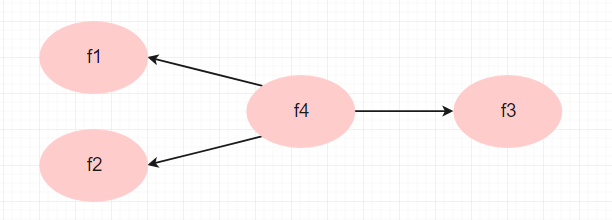

- 1. 前言
- 2. 结构方程特点
- 3. SEM建模流程
- 4. 视频教程
这是结构方程模型入门教程, 前面介绍理论部分, 后面会结合案例使用amos软件进行结构方程模型分析, 还会讲解如何汇报和整理结果。
本教程还提供视频教程, 不过视频教程是收费的, 视频和数据的下载地址在最后。
前言
由于很多学生在使用结构方程模型时, 不理解其原理, 造成错误百出, 更严重的是,
他们的指导老师也没有能力看出统计的错误, 导致大量不合格的论文出现。
因此我们编辑了这篇文章, 帮大家梳理结构方程的必要步骤, 以及如何汇报结果,
避免常见错误。
本文介绍了结构方程模型 (SEM)的最佳实践，以及这种统计技术在实际应用中的重要性。
由于是”实践”, 文章尽量以简短的篇幅讲清楚你应该做什么和不应该做什么,
最终目的就是正确的做完论文或者分析报告。
SEM是一个非常强大的统计建模工具，它将测量模型和结构模型合并到
协方差结构分析框架。本文在此简要介绍了SEM方法的主要步骤和特点，并且,
探索性因子分析 (EFA) 和验证性因素分析 (CFA) 通常用作建模设计的中间阶段, 也一并进行了介绍。
结构方程特点
两种结构
结构方程模型通常由两部分构成: 测量模型(mearurement model)和结构模型(structural model), 在上图中可以看到,
测量模型就是我们常说的因子结构, 因为有三个潜变量($\eta_1 \eta_2 \xi$
测量模型
你可以理解为因子结构。
探索性因子分析(EFA)通常被用作研究的初步步骤，如果你理论上, 或者根据前人经验, 是无法确定题目的因子结构,
你需要做EFA来提取因子, 为CFA做准备。但是, 由于大多数时候, 我们已经知道理论上的因子结构, 比如,
研究者根据某种因子结构设计的问卷, 或者使用前人验证过的问卷(所谓的验证就是做过CFA测试), 那么EFA不是必须汇报的,
不过作为研究者, 在做CFA之前做一下EFA没有坏处, 即便做了, 也并不一定要汇报, 这就是他们的关系。
结构模型
SEM 也可以被视为所谓的路径（因果）分析。路径分析
是多元回归分析的扩展，因为多元回归只有1个因变量,
但是在路径分析中, 变量间的关系很复杂, 自变量可能同时也是因变量,
因变量可能有多个, 所以路径分析让我们能够研究更复杂的变量关系。
由于这些关系通常暗藏在显变量的协方差矩阵中，
协方差矩阵是SEM的输入数据,
SEM有时也称为协方差结构分析 [2]。
SEM建模流程
第一步: 理论框架
根据你的经验, 或者对文献的梳理, 你可以画出这样的一个理论关系图吗? 这是你首先要做的, 在你什么都没有的情况下,
你需要首先构建这样一个理论模型, 以便指导你后续的工作。 如果你感觉无能为力, 做不出这样的理论框架, 说明你没有看文献,
或者对自己的专业一无所知, 那么你现在就需要去看文献, 其实很简单, 让
这个图的符号很简单, 双向箭头代表相关关系, 看图中, IN和DN是相关的, 不存在因果关系;
再看IN和CET之间的关系, 箭头从IN指向CET, 指的是IN对CET有影响, 自变量是IN, 因变量是CET。
当然, 我们还可能需要表达调节关系, 比如下图这样, GN的箭头指向了IN和CET之间的连线, 这说明GN可以影响IN和CET之间的关系,
注意这句话, GN影响的是关系, 而不是图中列出的变量。
如果你好奇我们是怎么做上面的理论图的, 我建议你使用word绘制, 或者一些在线工具, 比如: https://www.mlln.cn/drawio/
第二步 列出理论假设
理论假设就是你关心的想要证明的结论。我们可以举几个例子:
- 假设1: IN对CET有正向影响
- 假设2:DN对CET有负向影响
- 假设3:GN可以影响IN与CET的关系, 具体来说, GN增大可以增强IN与CET的关系, 也就是说GN正向调节IN与CET的关系。
你需要注意的地方是:
- 所有的关系必须指出是正向还是负向, 而不能说, 你不确定正负, 让数据来检验, 这是完全错误的思路
- 图中的关系不必全部改成假设, 假设必须是你关心的并且重要的, 能够体现你论文价值的
第三步 设计问卷或者数据指标
这一步主要是构建你的结构方程的测量模型, 对于问卷研究, 通常是寻找前人研究中用过的量表,
最好是经过CFA检验的量表, 因为如果你使用的量表的作者没有分析过CFA, 那么大概率上,
这个量表在CFA上可能会表现不好。很多同学抱怨SEM结果拟合很差, 可能你从选择量表这一步就错了!
对于经济学甚至工科的一些学生, 如果使用的经济指标作为变量, 在此基础上提取潜变量,
你必须注意, 前人有没有用过这些指标作为潜变量的指标, 如果没有, 你也要慎重使用,
你很可能无法在CFA分析中得到好结果。
在这一步最重要的成果是列出测量指标, 比如下面这样的表格:
下面是一个错误示范, 这个列表没有列出来每个题目所归属的因子或变量, 并且这些变量都不适合做结构方程, 他们要么是分类数据, 要么变量之间没有任何相关关系却归属到一个因子, 比如原作者把X4(来源地)和X5(教育程度)归结为1个因子, 这种随意的把测量指标分组, 并声称他们是什么因子, 都是错误的! 并且这种文章一旦发表就会遗臭万年。 你一定不能想象, 下面这个截图就是从发表的文章中截取的。
每个因子有几个测量指标(题目)比较好
推荐4个指标, 最低三个指标, 如果只有两个, 那么你的模型很难拟合, 内部一致性信度也会偏低, 如果只有1个指标, 那不构成一个潜变量, 直接用这个指标当作显变量.
第四步 数据前测
在做大规模收集数据之前, 先小规模测试, 比如50人的样本测试, 然后对你的数据质量进行检验。
流程图的高清图在这里
结构方程模型最关键的一步就是你要确保测量模型的质量,
我们通常需要前测数据, 重点是对测量模型进行检验,
而CFA就是用来确保测量模型质量的,
但是为了CFA结果好, 有一些工作需要做:
- 检查每个潜变量的探索性因子分析,确保它是单因子的
以上是必须要检查的工作, 当然还有一些是你最好要做的:
- 全部变量的探索性因子分析(检查每个潜变量是否可以相互区分开, 如果出现题目错乱, 问题很复杂, 需要自己研究,没有统一答案)
我实际上在上面的流程图中绘制了我的常用工作流程, 然而因为这个工作太过复杂, 我们很难用文字或者流程图来详尽解释全部的内容,
所以我录制了一套实战的流程的视频教程, 里面有详细的解答。
在流程图里, 我们认为如果量表前人研究用过的, 并且结果了CFA检验, 你不必进行EFA, 直接做CFA是可以的, 但是当CFA结果差,
你需要返回到EFA进行问题的诊断。
EFA部分问题
针对这一部分的常见问题, 我在这里先列出来:
是否有必要做EFA(探索性因子分析)
如果你的问卷是来自于前人研究, 并且它已经经过EFA的测试, 得到了题目的因子结构, 那么你没必要再做EFA;
如果你的问卷是自编问卷, 我通常建议你先做EFA; 不过如果你的问卷有预设的因子结构, 也就是很明确的哪个题归属于哪个因子, 那么EFA也不是必须的, 但是, 你必须明白, EFA的结果好可以确保CFA结果不会太差, 所以做EFA似乎又有某种必要性, 我想说的是没人规定你必须做EFA, 你做了的话只有好处没有坏处
但是, 我必须说一些实际情况, 大部分做SEM的研究都做EFA, EFA结果好对SEM至关重要, 如果你不想SEM模型拟合指数太差, 建议EFA都必须做;至于是否将EFA结果写入你的论文呢, 很多时候, 论文中仅仅是一句话带过, 但是如果EFA阶段花费了你很多时间和精力, 你可以在论文中多一些汇报。
EFA中, 因子载荷多少合适, 如果太低有必要删题吗
Field (2005)和Guadagnoli & Velicer (1988)建议, 如果一个因子有四五个因子载荷都在0.6以上, 那么可以认为这个因子是稳定的. Stevens (1992)建议因子载荷最低是0.4, 如果题目/变量测有不同的取值分布, Tabachnick and Fidell (2007) 建议使用更严格标准: 0.32 (poor), 0.45 (fair), 0.55 (good), 0.63 (very good) or 0.71 (excellent). 我们列举这么多标准的目的就是, 没有一个金标准说因子载荷必须到多少.
在实际工作中, 因子载荷常用标准是要高于0.5, 并且该题目在其他因子上的载荷要低于0.32, 才认为这个题目是可以被接受的 (Comery and Lee 1992; Laura J. Burton and Stephanie M. Mazerolle 2011), 但是, 由于大部分学生都是使用前人的成熟量表, 删题是非常不建议的, 世界上没有一个建议你因子载荷低于某个标准就必须删题, 大部分学生因为从课本学了一些所谓的删题标准, 就认为低于标准就得删题, 这是自己加的戏, 并在学生群体中以恶讹传讹, 还有一些老师也是半瓶子醋, 不断添油加醋。 实际上我们必须考虑题目本身的价值, 如果这个题被认为很有必要, 很有代表性, 那么不能删。 给一个成熟量表删题, 带来的最大问题是, 你的研究成果没有价值, 因为你的结果与其他人的结果无法比较, 别人都没删题, 你删题了, 导致测量工具不同, 统计结果不同很正常, 因此不具有讨论的价值。
EFA中KMO多少合适
KMO的全称是Kaiser-Meyer-Olkin, Kaiser(1970)给出的KMO标准是:
- 0.00 to 0.49 unacceptable.
- 0.50 to 0.59 miserable.
- 0.60 to 0.69 mediocre.
- 0.70 to 0.79 middling.
- 0.80 to 0.89 meritorious.
- 0.90 to 1.00 marvelous.
EFA要求的样本量
通常考虑样本量的时候, 我们要根据实际情况, 比如你的样本很罕见, 那没办法只能使用很少的样本,
当样本量很容易增加的时候, 建议参考下面的表格, 因子载荷越小, 需要越大的样本量, 使得载荷显著。
EFA怎么确定因子数目
有很多方法帮你确定因子个数, 常用的有:
- Kaiser提出的”因子的特征值大于1”, 因此有多少个因子特征值大于1, 就可以提取多少个因子
- Cattell提出的”碎石图”, 特征值变化锐减的点就是必要的因子个数
还有很多标准, 我们没必要列出来, 因为这个问题的重点不在于这些常见答案,
重点是, 我们经常错误的使用这些标准, 这些标准因为简单, 所以经常被过度使用。
我们下面提出一些情况, 你不必使用这些标准:
如果你明确知道你的题目应该提取几个因子, 你可以预设提取几个因子, 在SPSS这些常用软件中, 都可以自己定因子个数,
你没有必要一定遵守”特征值大于1”这个标准, 因为Kaiser本人都没说过你的因子的特征值必须大于1, 但是很可能你的统计学老师说过,
这就是我们的教育现状。如果你想要提取5个因子, 但是却得到了6个因子, 你需要观察最后一个因子, 也就是特征值最小的因子, 是不是有意义的, 如果没意义完全可以删掉, 也就是回到上一步, 把因子个数这只为5
如果你想要提取6个因子, 却得到了5个因子, 你需要观察第6个因子, 你需要回到第一步, 做因子旋转, 看第六个因子是不是合理的, 第六个因子包含的题目是不是合理的, 如果合理, 你应当保留6个因子, 而不是5个
最后, 我想说的是, 特征值对于提取几个因子有很大的参考意义, 而不能让它完全决定你的研究!你必须对你的研究负责, 而不是把责任推卸给Kaiser.
CFA部分
CFA与EFA有本质的区别, 但是他们也有类似的地方, 下图是一个例子, EFA的因子对所有指标变量都有载荷, 只不过很多分析报告中, 只报告最大的因子载荷, 因此你好像看到的是一个测量指标(题目)只对应一个因子, 但是实际上就像图中所画的, 每个因子都对每个测量指标有影响。但是对于CFA, 我们通常已经知道每个测量指标归属于哪个因子, 通常一个指标只受到一个因子的影响。
常用的聚合和区分效度有哪些
- 组合信度 Composite (construct) Reliability (CR),
- 平均方差提取量 Average Variance Extracted (AVE),
- 最大共同方差 Maximum Shared Variance (MSV), and
- 平均共同方差 Average Shared Variance (ASV).
这些指标都有常用的判断标准:

AVE和CR通常是我们用Excel手算的, 但是也有一些工具帮你算, 这里有一个计算器帮你.
一阶因子和二阶因子
上面的模型是1阶因子结构, 下面的模型是2阶, 很多人不清楚什么时候使用二阶因子结构i, 实际上由两个因素决定你是否可以使用二阶因子:
- 如果因子F1和F2高相关, 并且理论上他们属于某个共同的概念, 比如生活满意度下面分为经济满意度和情感满意度, 生活满意度很可能是一个二阶因子
- 如果你的研究不涉及更高的因子, 比如你的研究没有对因子f4做出假设, 所有假设仅涉及f2和f1, 那么你不要做二阶因子结构
- 你想知道f1和f2对其他变量的关系, 而不是f4, 那么就不要做二阶因子, 可以参考下面两个图
假设你想做如下的结构方程, 你没有必要设置二阶因子结构:
假设你想要做如下结构方程, 那么你有必要验证二阶因子:

第五步 正式实测
由于很多工作在前测阶段都做过了, 在正式实测后, 我们的工作就会减少, 通常不需要做EFA, 因为通常我们认为你正式实测阶段不应该改动题目,
因此EFA结果差也不太可能去修改你的题目了, 另外为了保证你的研究不是完全数据结果驱动, 一些专家建议EFA和CFA不要使用同一批数据。
正式实测阶段收集的数据, 需要做CFA和SEM即可。
下图中, 上面的模型是CFA模型, 下面的模型是SEM模型,
自变量之间需要有协方差吗, 也就是在图中看到的COV标记的曲线
这个问题没有确定答案, 当然结构方程的算法允许你在自变量之间增加协方差, 但是你可能回发现,
当你增加了协方差之后, 自变量到因变量的路径系数(例如P1)可能会降低, 当然不是说一定会降低, 但是存在这种可能,
甚至你可能发现, 路径系数低到不显著了, 但是同时, 模型的拟合度会提升.
从实践的角度看, 我建议当路径系数不太受影响的时候, 可以增加自变量之间的协方差, 但是如果增加协方差后发现路径系数由显著变为不显著,
我建议你不要增加协方差, 这种情况说明, 自变量(Factor1和Factor2)与因变量(Factor3)存在共线性, 并不代表自变量对因变量没有影响,
为了真实的体现这种关系, 我建议你去掉自变量之间的协方差。
但是为什么我们看到的结构方程, 很多都有自变量之间的协方差? 因为这样做可以提高模型的拟合指数. 然而
为什么模型越简单越好
最复杂的模型就是每个变量之间都有连线, 这导致模型总是完美拟合, 也就是说, 模型越复杂变量之间的关系越多, 拟合越好, 但是模型价值越低.
这就是为什么很多拟合指标都是惩罚模型的复杂度. 在结构方程中, 我们一直鼓励越简单越好, 但是降低复杂度就会降低模型拟合, 所以这需要研究者在拟合度和复杂度之间进行权衡.
数据非正态可以做结构方程吗
一般结构方程最常用的算法是极大似然估计, 这种方法假定我们的数据是服从多元正态分布的, 由于检查多元正态分布有些困难,
至少我们保证每个变量是正态分布, 或者不要偏离正态分布太多. 或者说只要不是极度偏离正态分布就可以.
常用的拟合指标及其标准
这些指标摘自: IntroductiontoStructuralEquationModelingReviewMethodologyandPracticalApplications
另外还有其他学者有别的标准, 查看这里
另外有学者统计了各个拟合指标在文献中出现的频率, 具体参考这里
什么是打包变量
当你的测量模型结果较差, 或者模型过于复杂, 比如你的模型中有二阶因子, 你可以将题目和平变成因子分, 这样让二阶因子结构变成一阶因子结构, 进而降低模型复杂度, 并且减少测量指标的数量, 减少潜变量数量, 尤其是当你的数据里较少的时候, 打包变量是常用的方法.
在学术界, 打包变量是非常专业的术语, 打包的方法非常多, 但是对于一般学生, 不建议研究复杂的打包变量的方法, 首先你不知道这样做对结果有什么样的影响, 其次你不清楚为什么使用这样的打包方法; 所以我建议所有需要打包变量的学生, 直接使用最简单的方法, 就是一个维度内的测量指标合成一个维度分, 维度作为潜变量, 变成显变量了。
视频教程
这篇文章列出的一些指导原则可能比较抽象难懂, 因此我们还会推出一个配套的视频教程进行讲解,
另外会有案例教程, 将这些原则应用到实际工作中. 视频教程与本篇文章都会在这个平台上, 大家去下载观看就可以了.
视频完整版及数据下载
https://afdian.com/item?plan_id=d72215a6fe7111eca07a52540025c377
参考文献
Laura J. Burton and Stephanie M. Mazerolle (2011). “Survey Instrument Validity Part I: Principles of Survey Instrument Development and Validation in Athletic Training Education Research.” ATHLETIC TRAINING EDUCATION JOURNAL 6(1): 27-35.
Kaiser, Henry F. (1970). “A second generation little jiffy”. Psychometrika. 35 (4): 401–415. doi:10.1007/BF02291817
J. F. Hair, W. C. Black, B, J. Babin, and R. E. Anderson, Multivariate Data Analysis, 7rd ed., Prentice Hall: New Jersey, 2010.
Comrey AL and Lee HB (1992) A first course in factor analysis (2nd edition). Hillsdale,NJ: Lawrence Erlbaum Associates.
Guadagnoli E and Velicer W (1988) Relation of sample size to the stability of component patterns. Psychological Bulletin 103 265-275.
Hair JF, Tatham RL, Anderson RE and Black W (1998) Multivariate data analysis. (Fifth Ed.) Prentice-Hall:London.
Field A (2005) Discovering statistics using SPSS. Second edition. Sage.
MacCallum RC, Widaman KF, Zhang S and Hong S. (1999) Sample size in factor analysis. Psychological Methods 4(1) 84-99.
MacCallum RC, Widaman KF, Preacher KJ and Hong S (2001) Sample size in factor analysis: The role of model error. Multivariate Behavioral Research 36 611-637.
Stevens JP (1992) Applied multivariate statistics for the social sciences (2nd edition). Hillsdale, NJ:Erlbaum.
Tabachnick BG and Fidell LS (2007) Using multivariate statistics. Fifth Edition. Pearson Education Inc.
Rex B. Kline(1998) Principles and Practice of Structural Equation Modeling NY: Guilford Press, 1998.
https://wenku.baidu.com/view/1a49b9f17c192279168884868762caaedd33ba2a.html
注意
统计咨询请加QQ 2726725926, 微信 shujufenxidaizuo, SPSS统计咨询是收费的, 不论什么模型都可以, 只限制于1个研究内.
跟我学统计可以代做分析, 每单几百元不等.
本文由jupyter notebook转换而来, 您可以在这里下载notebook
可以在微博上@mlln-cn向我免费题问
请记住我的网址: mlln.cn 或者 jupyter.cn